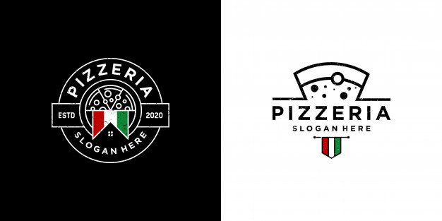

Just Pizza

Random Pizza Fact - Please consider this as a description
Historians from the William E. Macaulay Honors College discovered that the lower-income people of Naples would put slices of tomatoes on dough and top it with cheese to make a cheap and easy meal for their families. According to the researchers, tomatoes were thought to be poisonous during these days, which is why pizza was considered a cheaper food.